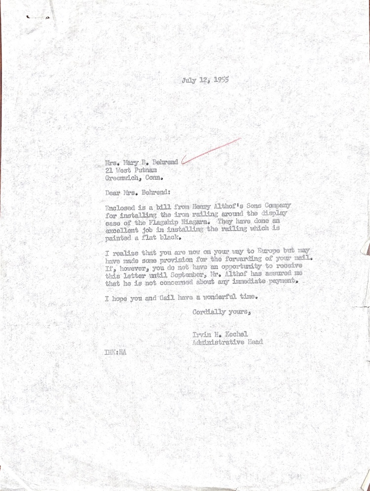

Letter from Irvin Kochel to Mary Behrend Irvin Kochel Letter July 12, 1955 Typewriter Paper July 12, 1955 Ire. Mary B. Behrend 21 West Putnam Greenrichy Conn. Dear Mrs. Behrend: Enclosed is a bil2 from Henr Althof Sons Company for installing the iron ratlinz around the display caso of the Flagship Illegara. They have done em excellent job in installing the railing which is painted a flat black. I realise you are on your way Europe but may have made some proviaion for the forvarding of your moll. If, however, you do not have the oportunity to recieve this letter until September, Mr. Althof has assured me that he is not concerned about any irmodiate payment. I hope you and Gail have a wonderful time, Cordially yours, Irvin He Kochol Administrative Head *THK: HA
